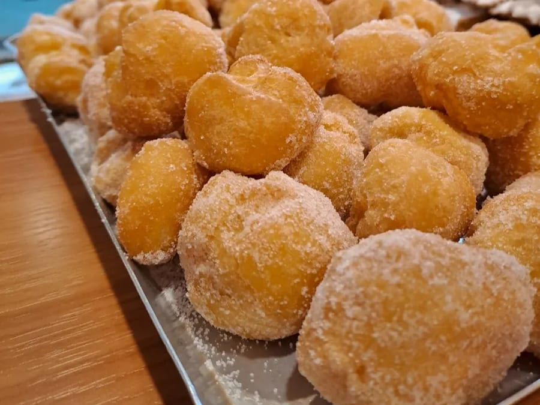
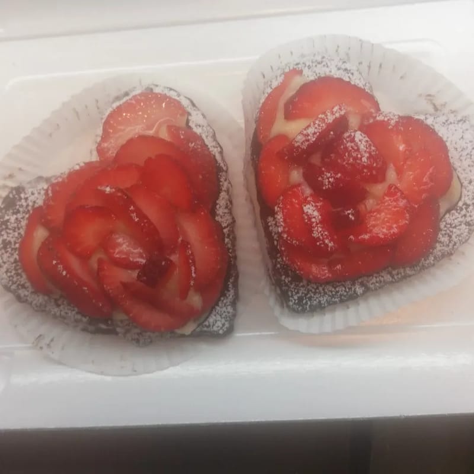
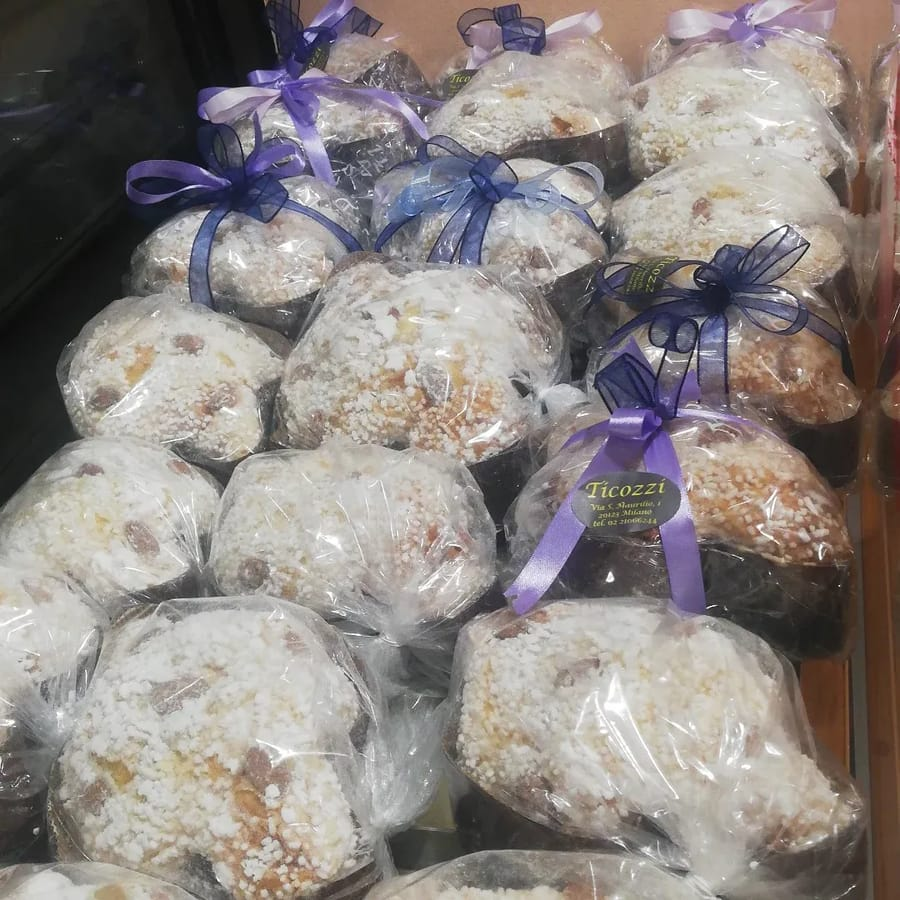
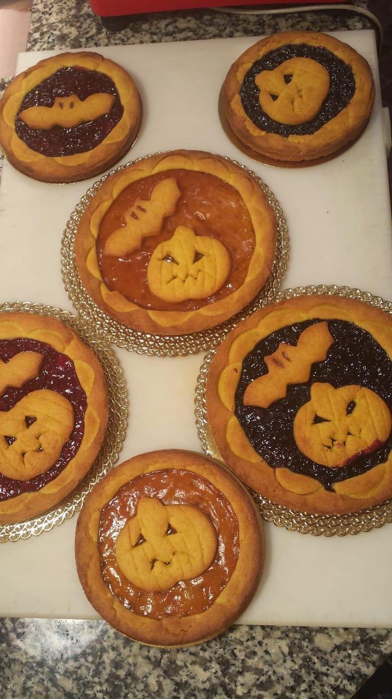
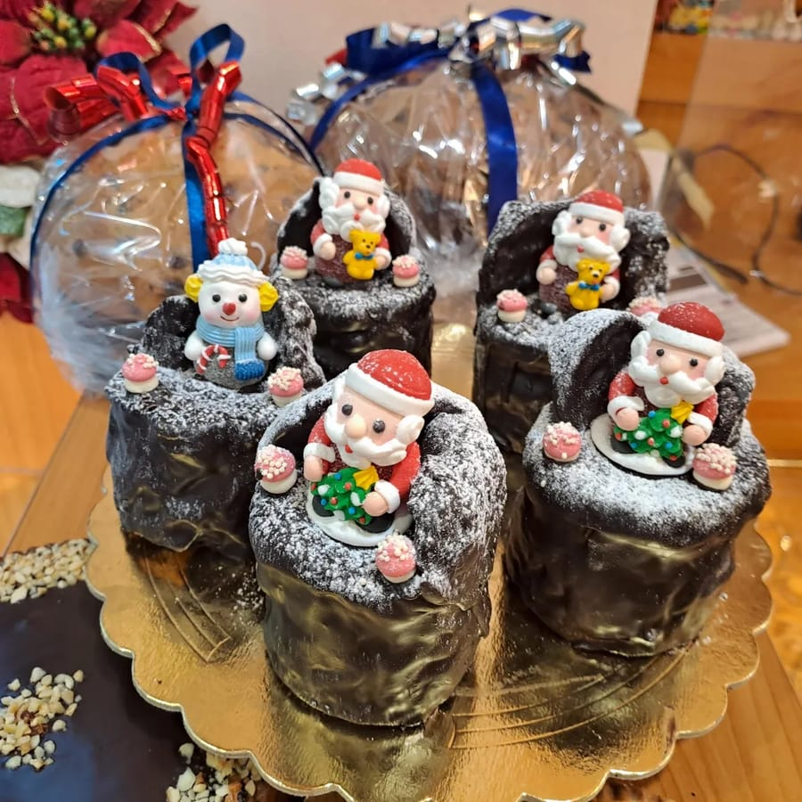

Via San Maurilio 1, all'angolo con Via Torino
Panettieri dagli anni 50.
In questo negozio porta avanti la tradizione dal 2000 il primogenito di seconda generazione Fabrizio insieme a Carla.
«Migliori focaccine e pizzette di Milano»
Appena sfornato il panettone si capovolge, a testa in giù sugli spilloni: così vuole la tradizione artigiana milanese.
Pasta madre, pizzette, focaccine
«Pane fatto esclusivamente con pasta madre» — noi, su Yelp
Il pane: michetta, sfilatino, pane arabo, di Altamura, schiacciatina, cremonesi, integrale, di segale, ai cereali.
E il salato di ogni giorno: pizzette e focaccine, focacce e pizze anche ripiene, preparate al momento; panzerotti, trecce di sfoglia, torte salate, panini.
Frolla, crostate, torte
Crostate e crostatine, gli occhi di bue e le stelle di frolla, le tartellette al cioccolato e al pistacchio, le torte al cioccolato e alle fragole, le sfogliatine, i cornetti e le treccine di sfoglia.
E le torte su richiesta: anche «le richieste dell'ultimo minuto».
Le feste
L'anno del banco
Ogni festa passa dal banco, con la sua cosa buona.

Carnevale
I tortelli: cottura, asciugatura, rifinitura.

San Valentino
I cuori alle fragole.

Pasqua
Le colombe, col nastro e l'etichetta ovale.

Halloween
Le crostatine con le zucche.

Natale
Il panettone e i panettoncini: «A Natale si può fare....»
Una famiglia di panettieri
«Diamo il massimo tutti i giorni per ottenere sempre il miglior risultato»
Panettieri dagli anni 50: in questo negozio, all'angolo fra Via San Maurilio e Via Torino, dal 2000 ci sono Fabrizio e Carla. Tre vetrine sotto tre insegne ovali: Panificio, Ticozzi, Pasticceria.
Dicono
Le pizzette, le focaccine, il panettone
4,7 su Google, 221 recensioni
«Panifico a pochi passi dal duomo… scelta vastissima e prodotti eccellenti, é tutto buonissimo. Anche il personale è molto cordiale. Per noi una tappa fissa…»
Luca Google, 4 mesi fa
«Le pizzette le mangerei come se fossero patatine, per non parlare delle treccine di sfoglia. Il panettone e la colomba... penso siano tra i più buoni che io abbia mai assaggiato»
Marco Pappagallo Google, 2 anni fa
«Uno dei migliori panettieri della città, sicuramente un posto ideale dove fermarsi in centro per mangiare una pizzetta o una focaccia ottime […].»
Daniele Cariboni Google, 9 mesi fa
«Ho trovato per caso questa panetteria mentre passeggiavo sulla viaTorino e sono stata attratta dal posto per acquistare un panettone artigianale. Vengo da Reggio Calabria e cercavo il tipico panettone milanese . Devo dire che è assolutamente il miglior panettone che io abbia mai assaggiato! Un gusto stratosferico con una fragranza eccezionale. […] Bella panetteria con personale cordialissimo. Top 🔝»
Teresa Lofaro Google, 2 anni fa
«Tutto buonissimo, dalle focaccine e pizzette ai cornetti e torte! super consigliato!»
margherita luccini Google, 8 mesi fa
«Secondo me il miglior sfilatino croccante di Milano. Ottimi anche i dolci. Da provare la "mini colomba" e le crostate. I signori Ticozzi e tutto lo staff sono gentili e professionali. Consigliatissimo!!!»
Paolo Cermelli Google, 2 anni fa
Dalle recensioni su Google, come sono state scritte. Anche la frase in alto viene da una recensione su Google. Tutte le recensioni su Google
Orari
Dal lunedì al sabato
Orari dalla nostra scheda Google (settembre 2026). La domenica siamo chiusi.
Dove
All'angolo con Via Torino
La mappa è di Google: aprendola, Google riceve il tuo indirizzo IP e può usare i suoi cookie.
- Dove
- Via San Maurilio 1, 20123 Milano, all'angolo con Via Torino
- In tram
- 3, fermata Via Torino – Via Palla, a circa 40 metri; 15 a Missori
- In metro
- M3 Missori, a circa 360 metri; M1 e M3 Duomo, a circa 390; M1 Cordusio, a circa 450; M4 Vetra, a circa 520
- Telefono
- 02 2106 6244